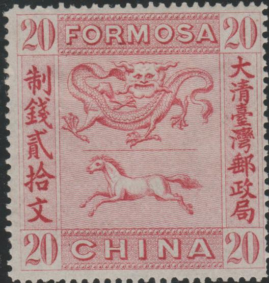
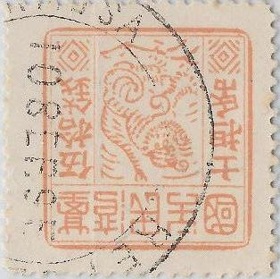
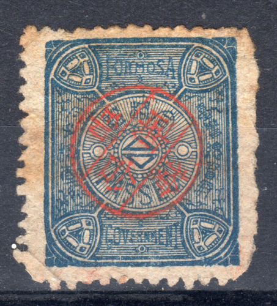

Note: on my website many of the
pictures can not be seen! They are of course present in the
catalogue;
contact me if you want to purchase the catalogue.
Some strange labels with only chinese inscription seem to have been used in 1887, I have no further information about these labels.

Certified genuine
20 c red 20 c green
These stamps exist with chinese overprint.
Value of the stamps |
|||
vc = very common c = common * = not so common ** = uncommon |
*** = very uncommon R = rare RR = very rare RRR = extremely rare |
||
| Value | Unused | Used | Remarks |
| 20 c red | RR | RR | |
| 20 c green | RR | RR | |
Forgeries exist, examples:


Other forgeries

Other forgeries

Kamigata forgery? This particular
forgery also exists in the color red.

This might also be a Kamigata forgery.
In all the forgeries I've seen, the horse has only one hindleg.
(Genuine, reduced size)


30 c green 30 c blue 50 c red 100 c violet 100 c blue
Value of the stamps |
|||
vc = very common c = common * = not so common ** = uncommon |
*** = very uncommon R = rare RR = very rare RRR = extremely rare |
||
| Value | Unused | Used | Remarks |
| All values | RRR | RRR | |
These stamps are very rare. Forgeries exist:

Forgeries with cancel "FORMOSA REPUBLIC 10 SEP. 95"
(Forgeries)


(probably forgeries)
If anybody has more information about the forgeries of these stamps, please contact me!

Fiscal stamp, inscription "FORMOSA PASSED GOVERNMENT".
Note: on my website many of the
pictures can not be seen! They are of course present in the
catalogue;
contact me if you want to purchase the catalogue.


3 p on 1 c yellow 1/2 a on 2 c green 1 a on 4 c red 2 a on 7 c brown 2 1/2 a on 10 c blue 3 a on 16 c green 4 a on 20 c brown 6 a on 30 c red 12 a on 50 c green 1 R on 1 Dollar red and lilac 2 R on 2 Dollars red and yellow
Value of the stamps |
|||
vc = very common c = common * = not so common ** = uncommon |
*** = very uncommon R = rare RR = very rare RRR = extremely rare |
||
| Value | Unused | Used | Remarks |
| 3 p on 1 c | * | * | |
| 1/2 a on 2 c | * | * | |
| 1 a on 4 c | ** | ** | |
| 2 a on 7 c | *** | *** | |
| 2 1/2 a on 10 c | *** | *** | |
| 3 a on 16 c | *** | *** | |
| 4 a on 20 c | *** | *** | |
| 6 a on 30 c | *** | *** | |
| 12 a on 50 c | R | R | |
| 1 R on 1 $ | RR | RR | |
| 2 R on 2 $ | RR | RR | |
More stamps of Tibet are listed in Cd 1.
The forger Gee-Ma seems to have made very dangerous forgeries of these stamps. A few blur pictures can be found at: http://fuchs-online.com/ntpsc/hot-spots/gee-ma.htm.
Note: on my website many of the
pictures can not be seen! They are of course present in the
catalogue;
contact me if you want to purchase the catalogue.
Mongolia issued stamps from 1925 onwards. In 1925 the following values were issued: 1 c brown, grey and black, 2 c olive, brown and black, 5 c lilac, grey, black and yellow, 10 c blue, brown and black, 20 c blue, grey and black, 50 c red, lilac and black and 1 $ olive, red, lilac, brown and black. These stamps exist with a horizontal perforation in the middle so they could be used for half of their value (by separating the two halfs).
(1925 issue, with horizontal perforation, reduced size)
In 1926 some fiscal stamps were issued with 'POSTAGE' overprint (1 c, 2 c, 5 c, 10 c, 20 c, 50 c, 1 $ and 5 $).
The first stamps with country name 'MONGOLIA' were also issued in 1926.

{kind=link}
{kind=link}
{kind=link}
{kind=link}
{kind=link}